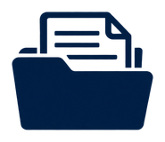
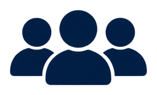

El patrimonio de La Habana se vive, se estudia y se cuida.
Reunimos los museos, instituciones y colecciones de Bienes Patrimoniales, de la Oficina del Historiador de la Ciudad, y ofrecemos servicios para conocer, conservar y compartir el patrimonio.
- 32Museos
- 19Bibliotecas

3Archivos
2Grupos de trabajo
Mapa de museos e instituciones
Te mostramos en un mapa de la ciudad de La Habana, dónde están ubicadas nuestras instituciones. Encuéntranos y planifica tu recorrido.
Servicios para vivir, estudiar y cuidar el patrimonio
El patrimonio no se visita solo: se usa, se habita, se vuelve a contar.
Cada recorrido, evento, alquiler o curso reactiva un espacio y mueve la economía de su entorno.
- Reactivar espacios: la actividad cultural sostiene el patrimonio.
- Abrir nuevos destinos: diversificamos la oferta turística y distribuimos visitantes hacia lugares nuevos.
- Crear oportunidades: empleo, talento creativo y cadenas de valor locales.
De tu idea a tu proyecto
- Cuéntanos qué necesitas.
- Te respondemos con una propuesta a medida en menos de una semana.
- Lo diseñamos contigo y con los actores locales.
- Lo hacemos realidad.